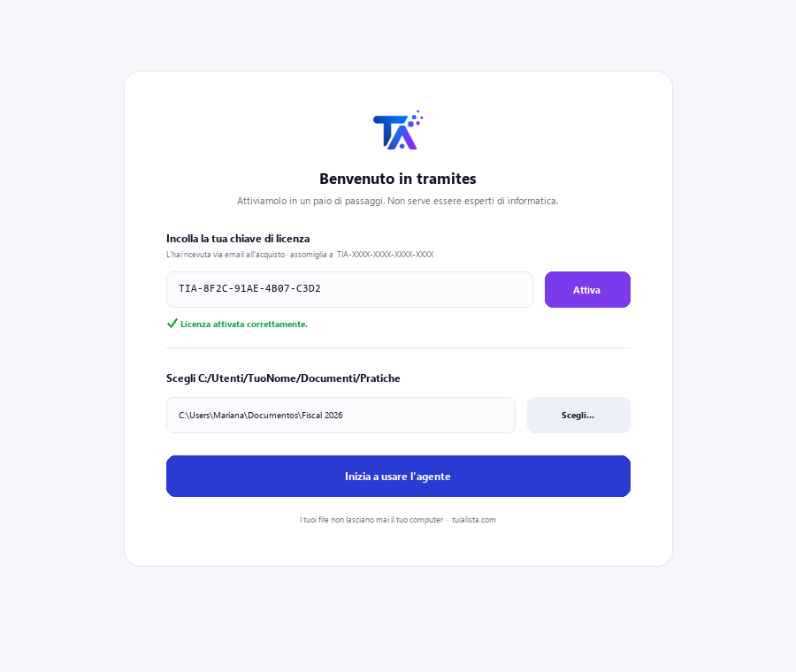
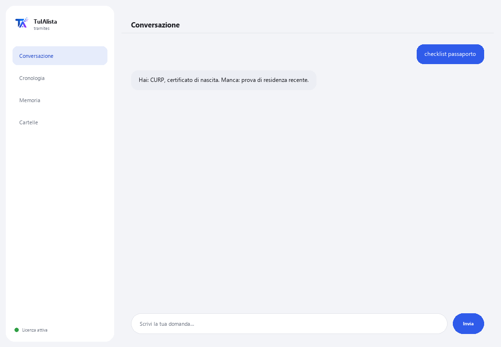

Agente Pratiche Amministrative
Ti guida passo dopo passo nelle pratiche amministrative messicane e ti dice quali documenti hai e quali ti mancano.
Cosa risolve e cosa ti serve?
Una pratica mal preparata significa tempo perso, code, rifiuti e a volte multe. Questo agente organizza i tuoi documenti personali, prepara la checklist di ciò che hai già e cosa manca, e ti prepara prima di recarti all'ufficio.
- Ti serve: la tua chiave di licenza (TIA-XXXX-XXXX-XXXX-XXXX) e la cartella con i tuoi documenti personali. Niente Python né conoscenze tecniche.
- Primo risultato in meno di 5 minuti: installi, attivi, scegli la tua cartella ed esegui documenti per vedere cosa è classificato.
- I tuoi documenti non lasciano mai il tuo computer — la classificazione gira in locale.
soporte@tuialista.com o visita tuialista.com/soporte — di solito rispondiamo lo stesso giorno lavorativo.1 Cosa fa questo agente
Gli indichi la cartella con i tuoi documenti (documenti d'identità, ricevute, atti, certificati) e lui:
- Li legge e li classifica per tipo (carta elettorale messicana INE, CURP, RFC, prova di residenza, certificato di nascita, ecc.).
- Genera una checklist della pratica: quali requisiti hai già e quali ti mancano.
- Rileva documenti in scadenza o scaduti (ad esempio, una prova di residenza di più di 3 mesi).
- Produce una guida passo dopo passo della pratica (ente, requisiti, se si fa online, costi e tempi approssimativi).
- Risponde alle tue domande: “di cosa ho bisogno per rinnovare il mio passaporto?”
Risultato: arrivi alla pratica con tutto in ordine e senza sorprese.
2 Installazione (2 minuti)
Per Windows. Non serve internet permanente né caricare nulla sul cloud.
Scarica l'installer da tuialista.com/descargar (agente Pratiche) e aprilo. Crea un collegamento sul desktop con il logo — non richiede Python né terminale.
Doppio clic sulla nuova icona. Incolla la tua chiave di licenza (ricevuta via email all'acquisto) e premi Attiva. Vedrai un segno di spunta verde quando è valida.
Seleziona la cartella con i tuoi documenti personali e premi Inizia a usare l'agente. La prossima volta si avvia direttamente — ricorda la tua chiave e la tua cartella.

3 Come usarlo
L'agente apre una finestra di chat, come un'app di messaggistica — non è uno schermo nero da programmatore. Scrivi il tuo comando o la tua domanda nella casella di testo in basso, premi Invia (o Invio), e la risposta appare come un messaggio, proprio come in questa immagine reale:

I comandi seguenti sono le parole che puoi scrivere nella stessa casella di testo:
> documentiRiepilogo dei tuoi documenti, il tipo rilevato e il loro stato (valido / in scadenza / scaduto).
> checklist <pratica>Per una pratica (es. passaporto, ine, rfc), quali requisiti hai già (e se qualcuno è scaduto) e quali ti mancano.
> guida <pratica>Guida completa: ente, documenti, se si può fare online, passaggi, consigli per evitare rifiuti, costi e tempi approssimativi.
> manca <pratica>Solo ciò che ti manca per quella pratica, e se ne hai qualcuno scaduto.
> scadenzeDocumenti in scadenza o scaduti.
> praticheCatalogo delle pratiche che l'agente conosce (passaporto, INE, RFC, CURP, patente, previdenza sociale, certificato di nascita, certificato fiscale, firma elettronica...).
> domanda libera?Scrivi qualsiasi domanda in linguaggio naturale, es.: posso ottenere il mio CURP online?
> esciTermina la sessione (funziona anche exit).
4 Esempi di uso comune
Prepararti per il passaporto
checklist passaporto → manca passaporto — vedi quali requisiti hai e cosa manca prima di fissare un appuntamento.
Guida completa di una pratica
guida atto
Rivedere documenti in scadenza
scadenze — rilevi se la tua prova di residenza non è più valida per anzianità.
Una domanda puntuale
di cosa ho bisogno per registrarmi al RFC?
5 Domande frequenti
I miei documenti vengono caricati su internet?
Quali formati accetta?
Effettua la pratica per me o la programma?
Genera documenti ufficiali?
Come classifica i miei documenti?
L'informazione sulle pratiche è sempre aggiornata?
In quale lingua mi risponde?
Legge un PDF scansionato?
Posso cambiare la cartella?
È informazione ufficiale del governo?
6 Risoluzione dei problemi
Non legge un .pdf o .docx
Una pratica non appare
Mostra “0 documenti indicizzati”
Mostra “Licenza non valida” o chiede di riconnettersi
“Nessun fornitore IA configurato”
Nessuna di queste soluzioni ha risolto il tuo problema? Scrivici direttamente — saremo felici di rivederlo con te.
soporte@tuialista.com o visita tuialista.com/soporte — di solito rispondiamo lo stesso giorno lavorativo.7 Privacy e riservatezza
I tuoi documenti personali non lasciano mai il tuo computer.
- L'agente legge e classifica i file in locale, sul tuo stesso dispositivo. Non li carica su nessun server né li condivide con nessun ente.
- La classificazione, la checklist e il rilevamento delle scadenze avvengono sul tuo dispositivo.
- L'unica cosa che viaggia su internet è: (1) una verifica che la tua licenza sia attiva — che non include i tuoi documenti —, e (2) quando generi una guida o fai una domanda, viene inviato un frammento (tipo di documento e la tua richiesta) al motore IA per redigere la risposta.